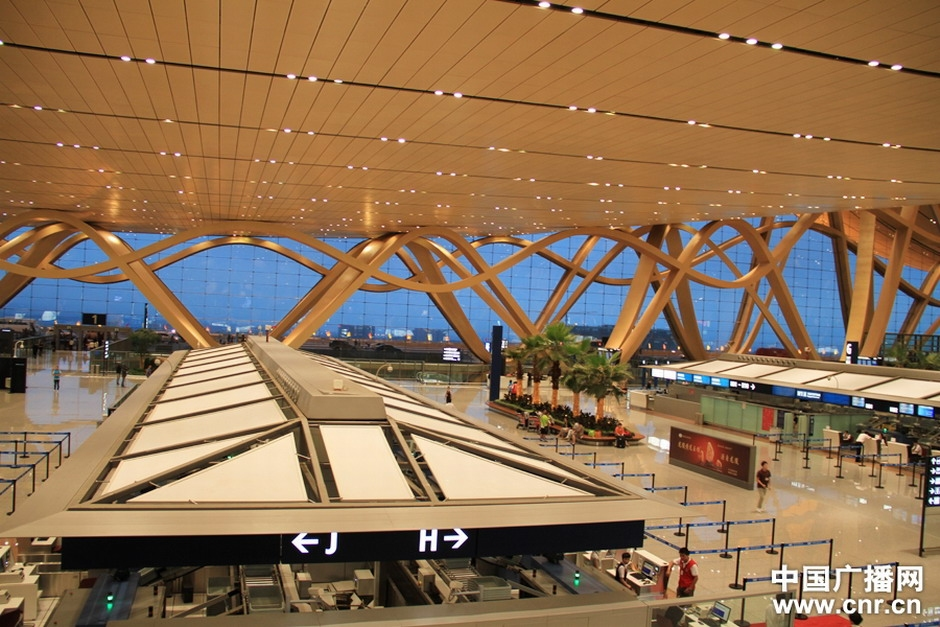
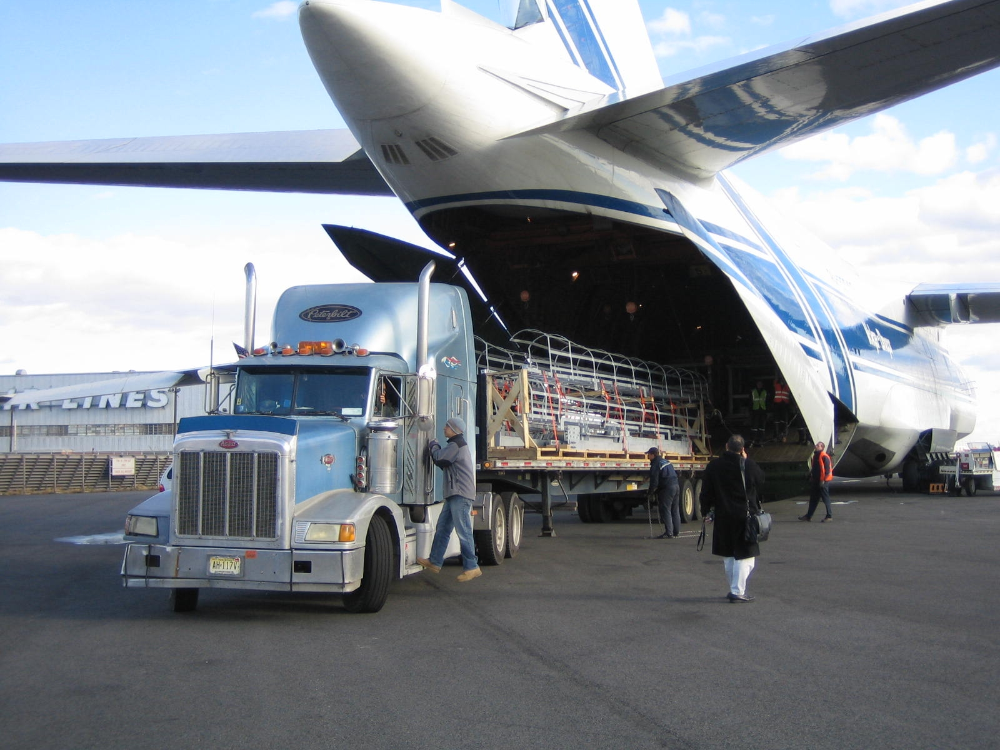
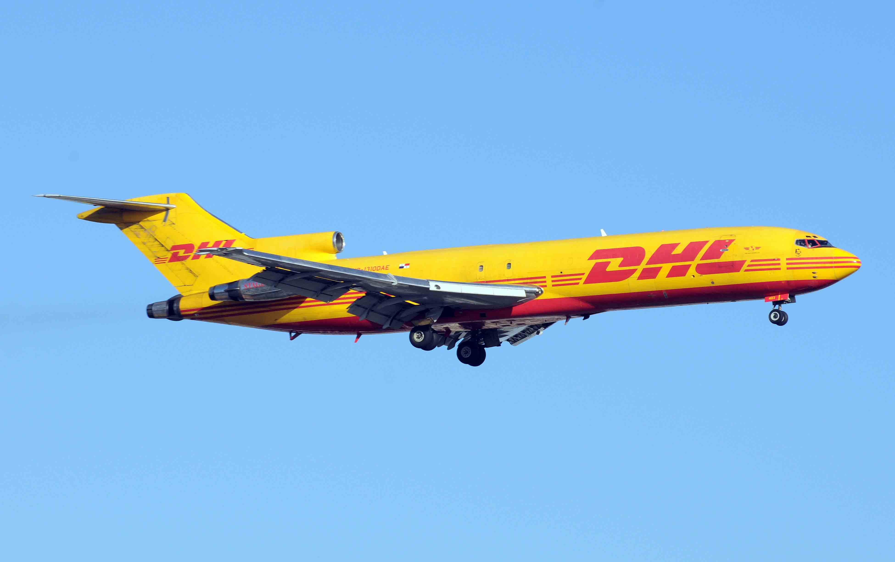

EL TRANSPORTE AÉREO
1. Definición de transporte aéreo
Se puede definir el transporte aéreo como el transporte de mercancías llevadas a cabo mediante aeronaves, ya sean puramente de carga o mixtas de carga y pasaje, en vuelos regulares o charter.
Las Compañías Aéreas son las Compañías transportadoras de mercancías y al propio tiempo son las propietarias de las aeronaves. Existen dos grandes grupos de Compañías Aéreas, unas pertenecientes s la Organización IATA y otras no pertenecientes a dicha organización.
Las compañías pertenecientes a IATA aplican unas tarifas establecidas por la Organización Internacional y operando en vuelos regulares, aceptando un código deontológico. Las otras compañías, tienen unas tarifas libres.
2. Agentes de carga aérea
Los agentes de carga aérea, son los Agentes Autorizados precio examen de capacitación y depósito de una garantía bancaria de hasta un máximo de 84.000 Euros. Por ATEIA-FETEIA (Asociación de Transitarios Expedidores Internacionales y Asimilados/Federación Española de Transitarios, Expedidores Internacionales y Asimilados), más la que a cada Agente le corresponda, y que actúan como mdediadores entre los Expedidores y las Compañías. Se ocupan de la concertación y emisión de los contratos de transporte, por lo que, la actividad básica del transitario aéreo es la de comisionista.
Su objetivo es la capitación del mayor volumen de carga que esté íntimamente relacionado con la red de corresponsales disponibles en el extranjero y la propia rentabilización de las cargas.
3. Asocició
Internacional de Transporte Aéreo-IATA
Es la entidad que agrupa a Compañías Aéreas transportadoras y a los Agentes Transitarios Autorizados en todo el mundo. Establece directrices que regulan la gestión del transporte y la contratación del mismo por parte de sus miembros. Ejerce, asimismo, una fundación de control del cumplimiento de dichas directrices para beneficio de todos sus miembros y de los usuarios.
4. Agentes corresponsables
Son aquellos Empresas que, dedicadas a la misma actividad económica del Agente de Carga Aéreo, colaboran con ella desde cualquier punto del extranjero para la organización de transportes entre ambos países normalmente, y ocasionalmente entre uno de ellos y un tercer país.

5. Objetivos y ventejas del transporte aéreo
La finalidad principal del transporte aéreo es la rapidez, máximo signo diferenciador frente a otros medios de transporte. Es además un transporte seguro en salidas y llegadas para las Compañías miembros de IATA, su siniestralidad es baja, permite adecuar los stocks acorde con el suministro optimizando los almacenes y la economicidad.
La limitación de carga está en función del espacio disponible en las bodegas del avión, por tanto, y principalmente en los vuelos mixtos, el objetivo fundamental de la Compañía Aérea es contratar cargas densas y regulares para la completa rentabilidad de sus vuelos.
En cuanto a los Expedidores, la elección del transporte aéreo está íntimamente determinadas circunstancias, como el caso de que el almacenaje de ese producto no sea factible o sea más costoso que el precio de su transporte, deba incluirse en proceso económico importante, cumplir un compromiso, etc.
Desde un punto de vista de la Logística, el transporte aéreo está llamado a tener una especial relevancia, como sistema de transporte que puede ayudar a la disminución de stocks.
6. Procedimientos
Carga Aérea Convencional: Es aquélla carga que representa la totalidad del contrato de transporte tratándose de una sola expedición.
Carga Aérea Consolidada: Es aquélla que reúne diversas expediciones previamente agrupadas por el Agente de Carga y que se entregan conjuntamente a la Compañía Aérea para la celebración de un único contrato de transporte.
Vuelos Charter: Son aquellos vuelos concertados no regulares. Por tanto pueden contratarse para el transporte de una o varias expediciones que aporten uno o varios Agentes de Carga y Transitarios, previo acuerdo entre todas las partes. Las Compañías que operan en este tipo de vuelos lo hacen habitualmente como actividad exclusiva.
Rutas Directas: Son aquéllas en las que la mercancía se transporta en única aeronave durante todo el trayecto hasta su destino.
Rutas con Escalas: Cuando una ruta directa no es posible o no deseable, puede transportarse la mercancía haciendo escala en un punto intermedio y utilizando dos aeronaves hasta su destino final. Aunque no es habitual pueden darse rutas que efectúen hasta dos o tres escalas antes de llegar a destino. La intervención de los Corresponsables Extranjeros y el objetivo de consolidadción, hace aumentar, considerablemente, el número de rutas utilizadas para el transporte.
Transportes Aéreos de Superficie: Debido a la falta de espacio o por inexistencia de vuelo operativo, en determinados tramos, las Compañías Aéreas se inclinan, cada vez más, a completar o complementar sus servicios con camiones que operan exactamente como aviones a efectos administrativos y aduaneros, normalmente cubren las rutas en períodos nocturnos y por ello representan un complemento ideal para la descongestión del servicio.

7. Evalución de cargas
Mercancías Peligrosas: son aquellas restrigidas para el transporte. IATA publica anualmente el manual de regulaciones, relativas al transporte de esas mercancías y a sus condiciones de embalaje, etiquetas, presentación y cantidad. Deben ir acompañadas del correspondiente certificado de peligrosidad emitido por el expedidor. La Organización de las Naciones Unidas ha encomendado a un Comité de expertos el desarrollo de los procedimientos y recomendaciones de transporte para este tipo de mercancías. Cabe distinguir dos grandes grupos, en función de su peligrisidad, los que podemos denominar como de Peligrosidad Generalizada y los Productos Radioactivos. Los segundos, dependen de la Agencia Internacional de Energía Atómica.
La ONU clasifica las mercancías en las siguientes clases de riesgo:
| Clases | Denominación |
| 1 | Explosivos |
| 2 | Gas |
| 3 | Líquidos inflamables |
| 4 | Sólidos inflamables |
| 5 | Sustancias tóxicas e infecciosas |
| 6 | Material radioactivos |
| 7 | Productos corrosivos |
| 8 | Mercancías peligrosa diversas |
Animales Vivos: Las condiciones para su transporte y tarifas aplicables, también son especiales. Pagan el doble de la tarifa normal y gozan de prioridad en las manipulaciones.
Mercancías Validosas: Se considera carga valiosa aquélla cuyo valor relativo excede de 1.000 D.US por kilo neto, en general tienen esa consideración los metales preciosos, piedras preciosas, valores, billetes de curso legal, sellos, joyas, obras de arte, etc. Han de pagar el 200 por cien de la tarifa normal aplicable y además están sujetas a declaración de valor y cargo por valor, del 0.5 por cien sobre el total. Es custodiada en los aeropuertos y guardada en cajas de seguridad previo pago de este servicio.
Cargas Especiales: Dato muy importante a tener en cuenta en la concertación de un transporte aéreo, por causa de sus características, normas de manipulación de un transporte aéreo, por causa de sus características, normas de manipulación, medidas y densidad. En esos casos, son datos excepcionales a considerar, al objeto de disponiblilidad de espacio y accesibilidad a la bodega de la aeronave.
Mercancías Perecederas: Son aquéllas que por su naturaleza, sean susceptibles de deterioro o pérdida debido a cambios de clima, temperatura o cualquier otra situación normal. Se harán reservas por adelantado y se marcharán los paquetes y los documentos, claramente como, oerecederos. Este tipo de mercancías tiene siempre prioridad, al igual que los animales vivoss, sobre cualquier otro tipo de carga.

8. Documentación
ElConocimiento
Aéreo-AWB (air waybill), es el documento más importante emitido por un transportista aéreo de carga o por sus Agentes de Carga Autorizados. Combina diferentes propósitos:
*Evidencia la conclusión de un Contrato de Transporte.
*Prueba del recibo de las mercancías para su envío.
*Es una factura de flete aéreo.
*Condiciones perticulares.
*Sirve como certificación de la existencia de un seguro, si así lo requiere el expedidor.
*Actúa como guía para los empleados del Transportista para manejar, despachar yn entregar.
El Conocimiento Aéreo, puede ser de dos tipos, uno como Conocimiento Aéreo de una Compañía Aérea con la previa impresión del Código de Idntificación del Transportista Emisor, o puede ser un Conocimiento Aéreo Neutro, sin ninguna identificación del Transportista.
El AWB es un documento no negociable. Los AWB de Compañía Neutros tienen 3 originales y 9 copias.
ORIGINAL 1, (verde) es para el Transportista Emisor, para conservarlo con fines contables y para que sirva como evidencia documental de la firma del Contrato de Transporte por el Expedidor y el Transportista.
ORIGINAL 2, (rosa) es para el Destinatario, acompañar a la expedición hasta su destino final y se entregar al destinatario junto con la carga.
ORIGINAL 3, (azaul) para el Expedidor como prueba de entrega de la mercancía para su expedición y como la prueba documental de la firma del Contrato de Transporte por parte del Transportista y el Expedidor.
Las copias son, por este orden:
Copy 4, Recibo de entrega / delivery receipt.
Copy5, para el aeropuerto de destino / for airport of destination.
Copy6, para el tercer transportista / for airport of destination.
Copy7, para el sengundo transportista / for second carrier.
Copy8, para el primer transportista / for first carrier.
Copy9, para el agente / for agent.
En ocasiones, cuando un Agente de Carga consolida, emite el AWB HOUSE a cada cargador. Una vez consolidado es enviado el bulto al aeropuerto para su carga, emitiéndose el correspondiente AWB MASTER que engloba toda carga.
Otros documentos:
*Manifiesto de carga.
*Manifiesto de transferencia de carga.
*Certificado de peligrosidad.
*Certificado de no peligrosidad, para mercancías susceptibles de ser consideradas peligrosas por su naturaleza.
*Etiquetas.
*Documentación de Aduanas.
*Documentación comercial.
*Certificados de Lista Negra.
*Documentaciones consulares.
*Certificaciones varias.
*Cartas de crédito.
9. Responsabilidades del Expedidor y del Transportista
El transportista o su Agente Autorizado pueden cumplir, aunque no está obligado, con las formalidades requeridas por las Aduanas y otras Autoridades Gubernamentales por cuenta y en nombre del Expedidor, además de adelantar todo tipo de derechos, tasas eimpuestos, al igual que otros desembolsos. En estos supuestos, el Expedidor, Destinatario y Propietario de la mercancía serán solidariamente responsables ante el Transportista por los reembolsos de los pagos efectuados por estos conceptos.
A estos efectos, una copia del AWB certificado por el Transportista se considerará como un original. El Expedidor está obligado a cumplir todas las formalidades Aduaneras y normas requeridas por los Gibiernos de los Países de salida, llegada y sobrevuelo, relativas al empaquetado, transporte y entrega de la mercancía incluyendo la facilitación de dicha información y documentación cuando el cumplimiento de estasformalidades lo exija. Teniendo en cuenta que el Transportista no está obligado a averiguar la veracidad o suficiencia de la información exigida sobre la información, documentación o etiquetaje.
La responsabilidad de los transportistas, por causas a ellos imputables es de 17 Derechos Especiales de Giro por kilogramo-DEG / Kg. de mercancía. A los viajeros se les indemniza con 500 DEG por equipaje facturado o de mano, bien por pérdida o avería. Por retraso en la entrega de la carga o equipaje facturado, hasta el límite de la cantidad equivalente al precio del transporte. Si el expedidor desea que el transportista asuma una responsabilidad mayor, debe declararlo previamente y pagar el cargo por el valor aplicable.
Las indemnizaciones por muerte o lesiones de personas son 100.000 DEG por muerte o incapacidad total permanente, hasta 58.000 DEG por incapacidad parcial permanente y hasta 29.000 EDG por incapacidad parcial temporal.
En cuanto a las indemnizaciones relativas a daños producidos a personas y cosa que se hallen en la superficie terrestre por acción de la aeronave, en vuelo o entierra, o por cuanto de ella se desprenda o arroje, se establece:
*Para aeronaves de hasta 500 Kg. de peso bruto, 220.000 DEG.
*Para aeronave de peso bruto mayor de 500 Kg. y hasta 1.000Kg, 660.000 DEG.
*660.000 DEG, más 520 DEG por kg. que exceda de los 1.000, para aeronaves que pesen más de 1.000 y no excedan de 6.000 Kg.
*3.260.000 DEG más 330 DEG por Kg. que exceda de los 6.000, para aeronaves que pesen más de 6.000 Kg. y no excedan de 20.000 Kg.
*7.880.000 DEG, más 190 DEG por Kg. que exceda de los 20.000, para aeronaves que pesen más de 20.000 Kg. y no excedan de los 50.000 kg.
*13.580.000DEG, más 130 DEG por kg. que exceda de los 50.000, para aeronaves que pesen más de 50.000 kg.
Se entiende como peso de la aeronave, el máximo autorizado para el despegue en el certificado de aeronavegabilidad de la aeronave.
Las indemnizaciones por muerte o lesiones de personas, son las citadas anteriormente incrementadas en un 20%. Si fuesen varios los perjudicados y la suma global de los daños causados excediera de límites antes citados, se reducirá proporcionalmente la cantidad que haya de percibir cada uno.
Las reclamaciones que haga el receptor han de hacerse por escrito, dirigidos al transportista, en los siguientes casos de:
*Daños visibles en la mercancía ante de los 14 días de la recepción.
*Deotros daños a la mercancía dentro de los 14 días de la recpción.
*De retraso a los 21 días desde la fecha en que debía ser las mercancías supuestas a su disposición en destino. Por retraso se entiende el día siguiente si hay plazo.
*De no tener lugar la entrega de la mercancía no más tarde de los 120 días desde la fecha de emisión de la Carta de Porte Aéreo.
*Para reclamar el flete.
|